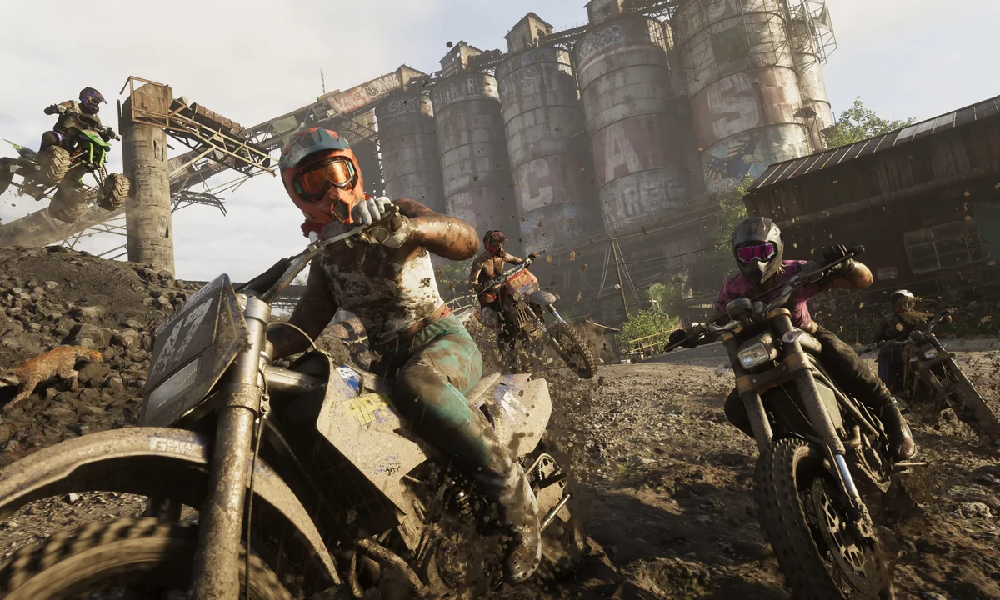

GTA VI
Radios de GTA VI: emisoras, podcasts y cómo escuchar música en Leonida
Guía de las radios de GTA VI: emisoras reveladas por Rockstar, podcasts para Jason y Lucia, escucha a pie y dónde consultar avances oficiales.
Secretos, detalles y descubrimientos sobre videojuegos, anime y cultura digital.
Lectura destacadaGuía de las radios de GTA VI: emisoras reveladas por Rockstar, podcasts para Jason y Lucia, escucha a pie y dónde consultar avances oficiales.
Ordenadas por última actualización. Cada artículo muestra la fecha de revisión.

Guía con algunos secretos de GTA VI hallados tras el estreno: el Skunk Ape, el encuentro ovni, una torre de radio y la casa relacionada con un misterio. Incluye spoilers.

Rockstar lanzó la edición Deluxe de la banda sonora de GTA VI el 23 de noviembre. Esto es lo confirmado sobre las 23 pistas extra, los artistas y el álbum original.

Referencias de Florida, fauna y encuentros extraños están llamando la atención en los primeros días de GTA VI. Esto es lo reportado y lo que sigue abierto.

Una guía para entender los easter eggs, descubrir secretos con paciencia y comprobar si un hallazgo está confirmado o es un rumor.

Una mirada a la fauna y los paisajes de Leonida en GTA VI, separando lo que aparece en materiales oficiales de lo que aún debe comprobarse.
Explora la biblioteca por tema y formato.